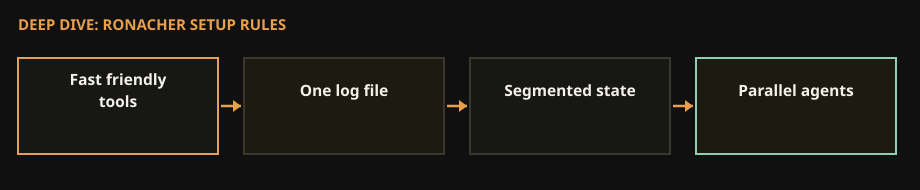

Deep Dive: Ronacher Setup Rules
Every recommendation from Agentic Coding Recommendations with its reason, the yolo alias, the Makefile log pattern, and the tool design rules. Source: Armin Ronacher, lucumr.pocoo.org, 12 June 2025, read in full. Confidence: High.

Base setup
- Claude Code on the 100 dollar Max plan, Sonnet as his model pick at post time, for speed and cost balance.
- Alias, verbatim in effect: claude-yolo runs claude --dangerously-skip-permissions. Risk control sits in the environment: dev work lives in Docker, so a wild agent hits a container, not the host.
- Token discipline: no screenshots and no browser runs for routine work. Both burn context for little signal in his setup.
- MCP: near zero. Use it only when a plain tool proves too unreliable. His one standing exception: Playwright MCP. Database work goes through psql. Custom tools are plain scripts.
Stack picks with reasons
- Go for new backends: a context system agents handle well, test caching for speed, structural interfaces, low ecosystem churn, and code that tolerates sloppy generation.
- Python with care: pytest fixture magic confuses agents, async event loop errors cost turns, and slow interpreter start taxes each loop step.
- Frontend: Tailwind, React with TanStack Query and Router, Vite. One trap named: the TanStack file router dollar param file names break under shell interpolation and confuse agents.
- Dependencies: upgrade slower than feels right. Prefer code generation over a new dependency. Prefer stable ecosystems: Go, Flask.
Tool design rules
Anything can be a tool. A good tool for an agent meets four tests from the post: fast, since crashes pass but hangs kill a loop; friendly, with error text that teaches the fix; chaos proof, built for an LLM chaos monkey, with no user error and no undefined behavior as a design stance; and observable, so a failure shows its cause.
The Makefile log pattern, step by step
- Critical tools live in a Makefile. One target starts the dev stack: make dev.
- A process manager starts services and writes a pidfile. A second start attempt fails loud with a services already running note, in place of a silent double start.
- All service output prints to the terminal and lands in one log file the agent can read: make tail-log shows it.
- Debug sign in mail lands in the log. A CLAUDE.md line tells the agent: read the log for the confirmation link. Result: the agent can complete a full sign in flow alone in the browser.
- Speed rule for agent built tools: milliseconds, not minutes. For one slow app he built a watcher daemon: drop a Python module in a watched folder, the daemon runs it and writes output to the log.
Code style for agent readers
The dumbest code that works wins. Functions with clear, long names beat classes. No inheritance tricks. Plain SQL. Permission checks local and visible in the function that acts. Refactor when a pattern repeats at scale, such as utility classes across 50 files, and not before.
Parallel sessions
One agent is slow. Parallel agents are the win, and shared state is the cost. Segment the state: a second checkout per agent, separate databases, separate Redis. Name the segments before the agents start.
Apply this to your work
Your VM work hits his traps by name: slow Python starts in agent loops, fixture magic in test suites, and log output that agents cannot read. Copy the Makefile pattern into your active repos: one start target, one tail log target, one log file, and a rule line that points the agent at the log for sign in links and error text. His state segment rule also fixes a pain in your parallel lanes: one checkout, one data store, one log per lane, named in the task card before work starts.
Replication checklist
- Add make dev and make tail-log to one active repo. One log file, agent readable.
- Add the log pointer line to that repo rule file.
- Write your segment map before your next parallel run: checkout, data, log per agent.
- Audit one tool against the four tests: fast, friendly, chaos proof, observable.
Prompt file: prompts/harness-loop.md holds the loop form that pairs with this setup.
Visual map of this page
Two views of one page: a Mermaid flow for work order, rendered by the local Mermaid library in this folder, and a markmap for concept groups.
Mermaid source, for offline read
flowchart LR A[make dev] --> B[Services plus pidfile] B --> C[One log file] C --> D[Agent reads log] D --> E[Sign in link, errors, proof] E --> F[Fix in loop]
How to read the flow diagram. Step 1: start at the first box. Step 2: follow each arrow to the next stage. Step 3: at a branch box, read both paths before a choice. Step 4: a loop arrow means work returns for one more pass vs a test.
Markmap: concepts on this page
- Deep Dive: Ronacher Setup Rules
- Setup
- Yolo alias in Docker
- Near zero MCP
- psql for data
- Stack
- Go backends
- Python with care
- Tailwind and Vite
- Style
- Dumb code wins
- Long clear names
- Plain SQL
- Setup